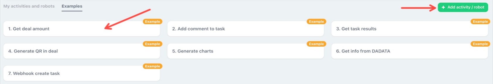
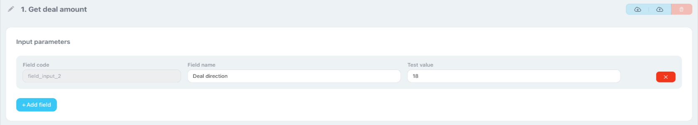
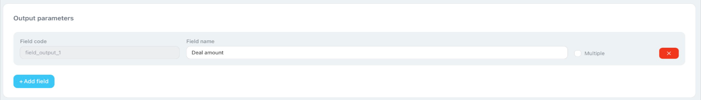
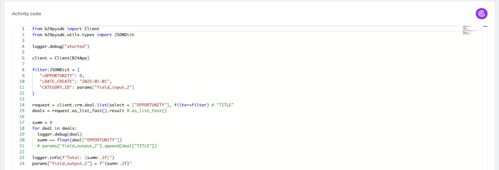
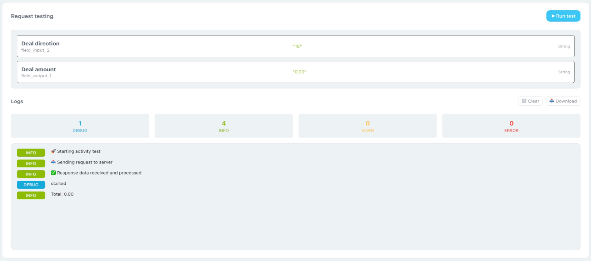
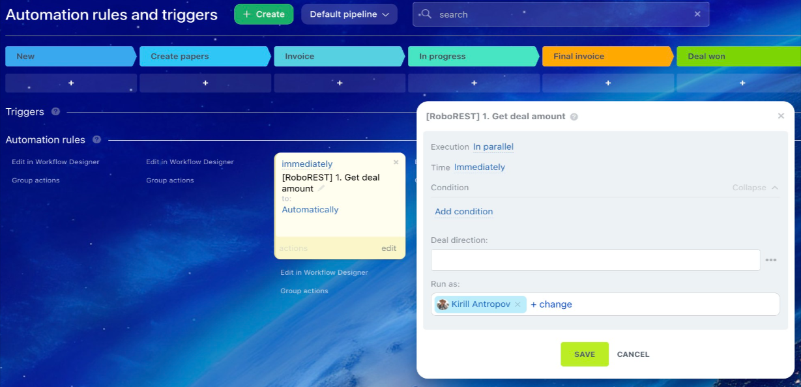
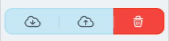

Creating a Robot/Activity
This guide shows how to create a new robot/activity in the RoboREST app for Bitrix24, configure input and output parameters, work with the Python code editor, and verify the result with a test.
Step 1: Create a new robot/activity
It is easiest to create a new activity in one of two ways: use a ready-made example from the “Examples” tab, or start from scratch. On the RoboREST main screen, click the green “+ Add activity / robot” button in the top-right corner.

The robot/activity creation page will open. Enter a name and continue to parameter settings.
Step 2: Configure input parameters
Input parameters are the data your robot receives as input (for example, from the previous step of a business process).

In the “Input parameters” block, click “+ Add field”. Fill in the fields:
- Field code: generated automatically (for example,
field_input_1). - Field name: enter a clear name (for example, “Deal ID”).
- Test value: fill in a value for testing.
Add the second field the same way (for example, “Contact ID”).
Step 3: Configure output parameters
Output parameters are the data the robot returns after it completes its work.

In the “Output parameters” block, click “+ Add field”. Fill in the fields:
- Field code: for example,
field_output_1. - Field name: for example, a user-friendly name for
field_output_1.
Important: if the parameter should return a list (an array), enable the “Multiple” switch to the right of the field.
Step 4: Work with the code editor
Scroll down to the “Robot/Activity code” section. Here you will find a Python code editor with syntax highlighting and autocomplete, similar to the VS Code editor.

At the top of the file, there is usually help in comments: which objects and libraries are available by default:
params— a list of all input and output parameters.logger— a logger for debugging.accessToken,memberId,domain— portal data.B24App— a Python SDK object for working with the Bitrix24 REST API.- Standard Python libraries:
math,datetime,os,json,http.client, and others. - Additional libraries:
b24pysdk,qrcode,requests,pillow,numpy,matplotlib.
Step 5: Test the robot/activity
Before saving, it is worth checking how the code works. Scroll down to the “Testing requests” block.

Go back to the input parameters and fill the “Test value” column
(for example, 123). Then click the blue “Run test” button on the right side
of the testing block.
Check the “Logs” section at the bottom. On success, you will see green INFO labels. Errors are displayed in red ERROR.
Step 6: Use the logger
For debugging, print messages to the log. In the code editor (below the help comments) you can add, for example:
logger.info("Test message")
logger.debug("Debugging details")
logger.warning("Warning")Click “Run test” again. Your messages will appear in the “Logs” block. Use the tabs at the top (DEBUG, INFO, WARN, ERROR) to see only the messages of the log level you need.
Step 7: Save
When parameters are set, the code is written, and you have tested it, click the blue “Save changes” button at the bottom of the page (or in the bottom-right corner).

After saving, the new activity is created and becomes available for use in the Bitrix24 business process designer.
Import and export scripts

The page also provides import and export options for the created scripts. This helps you keep versions and transfer code between portals.